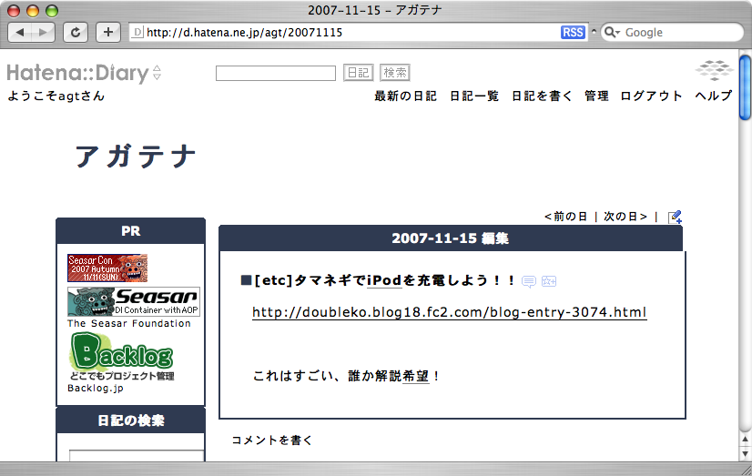
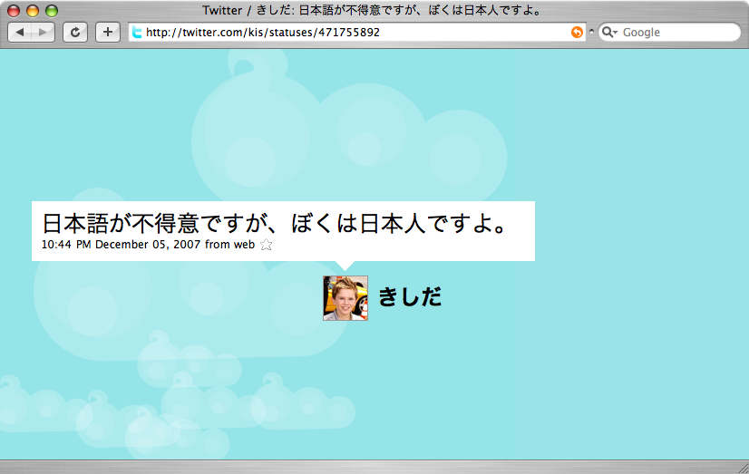
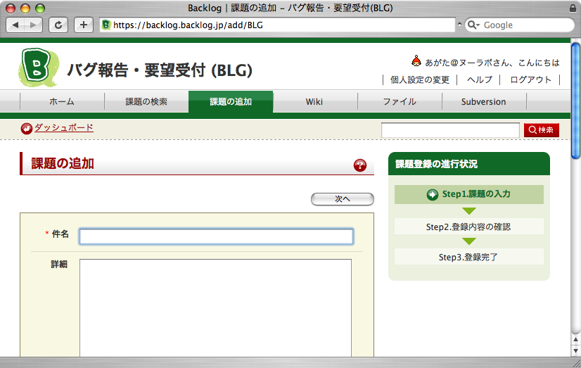
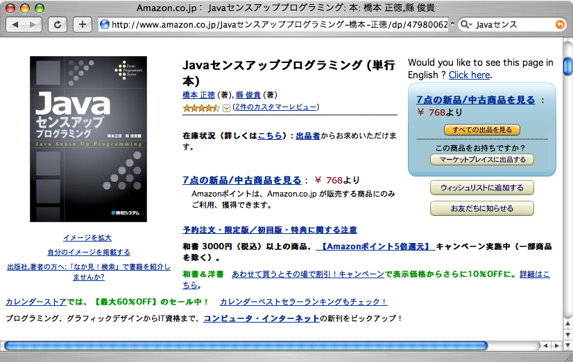

Cubbyの場合
<t:input type="text" name="userName" />
<t:select name="typeId"
items="${action.todoTypes}"
labelProperty="name"
valueProperty="id"/>
strutsの場合 <html:text property="userName"/> <html:select property="type"> <html:optionsCollection property="choices" value="id" label="name" /> </html:select>
カスタムタグは５つだけ
public class TodoAction extends Action {
// /todo/edit
public ActionResult edit() {
return new Forward("edit.jsp");
}
}
struts-config.xml
<form-beans>
<form-bean name="todoForm"
type="example.form.TodoForm" />
</form-beans>
<action-mappings>
<action path="/todoEdit.do"
type="ex.action.TodoEditAction" name="todo">
<forward name="success"
path="/todo/edit.jsp" />
</action>
</action-mappings>
public class LoginAction extends Action {
public ValidationRules loginValidation =
new DefaultValidationRules("login.") {
public void initialize() {
add("userId", new RequiredValidator());
add("password", new RequiredValidator());
}
};
@Validation(rules="loginValidation",
errorPage = "/todo/login.jsp")
public ActionResult process() {
...
}
}
アノテーションは３つ
http://d.hatena.ne.jp/agt/20071115 
http://twitter.com/kis/statuses/471755892 
https://backlog.backlog.jp/add/BLG 
http://www.amazon.co.jp/Javaセンスアップ
プログラミング-橋本-正徳/dp/4798006289 
// http://example.com/todo/1
public class TodoAction extends Action {
public String id;
@Url("/todo/{id}")
public ActionResult show() {
System.out.println(id);
}
// 正規表現も使えます
//@Url("{id,[0-9]+}")
}
#httpd.conf RewriteRule ^\/todo\/([0-9]+)? /todo.do?id=$1
# config/routes.rb
ActionController::Routing::Routes.draw do |map|
map.connect '/todo/:id',
:controller => "todo", :action=> "show"
end
| プロダクト | 言語 | 種類 | 備考 |
|---|---|---|---|
| mod_rewrite | - | 一元管理 | httpd.conf |
| Rails | Ruby | 一元管理 | config/routes.rb |
| Django | Python | 一元管理 | URLconf |
| UrlRewriteFilter | Java | 一元管理 | /WEB-INF/urlrewrite.xml |
| Cubby | Java | 個別 | Javaのアノテーションで |
| Catalyst | Perl | 個別 | Perlの属性で |
login.html <form id="form"> ユーザID:<input id="userId" type="text" name="userId" /> パスワード:<input id="password" type="password" name="password"/> </form>
login.mayaa
<t:form m:id="form" action="${contextPath}/todo/login/process"
method="post" value="${action}"/>
<t:input m:id="userName" type="text" name="userName" />
<t:input m:id="password" type="text" name="password" />
mvn archetype:create -DgroupId=(作成するプロジェクトのグループID 例:com.foo.bar) -DartifactId=(作成するプロジェクトのアーティファクトID 例:barapp) -Dversion=(作成するプロジェクトのバージョン 例:1.0-SNAPSHOT) -DarchetypeGroupId=org.seasar.cubby -DarchetypeArtifactId=cubby-archetype -DarchetypeVersion=0.9.2 -DremoteRepositories=http://maven.seasar.org/maven2/ (実際には1行で入力してください) mvn eclipse:eclipse mvn tomcat:run
ありがとうございました。